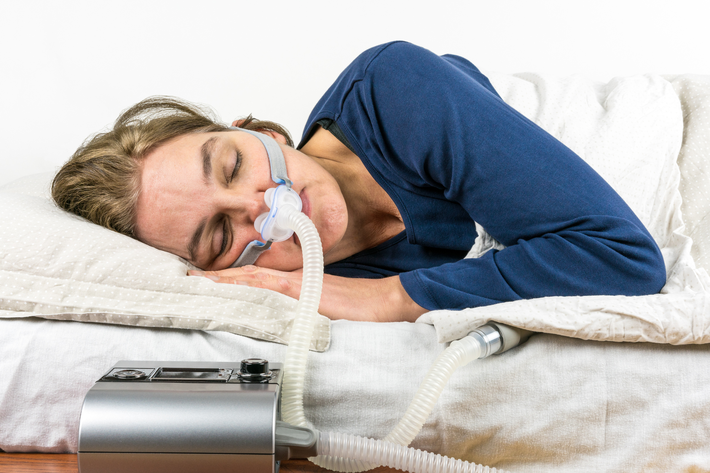

If you're choosing a sleep lab in Oakland or Macomb County, the single most useful question to ask is whether the lab is accredited by the American Academy of Sleep Medicine. At AAIRS Clinic & Troy Sleep Center, our Troy and Sterling Heights labs hold that accreditation — and the reasons go well past a logo on the wall.
Sleep studies look deceptively simple from the outside: a patient sleeps, sensors record, a report comes back. In reality, every step of that chain — sensor placement, signal quality, technician scoring, physician interpretation — can vary widely between facilities, and the differences directly affect whether your diagnosis is correct. AAIRS Clinic chose AASM accreditation because the standard forces every part of the chain to meet a specific bar, then re-checks that bar on an ongoing basis.
What AASM accreditation actually requires
The American Academy of Sleep Medicine accreditation process audits a sleep facility across roughly a dozen domains: physician credentials, technologist credentials, equipment specifications, recording-channel quality, scoring rules, quality assurance procedures, patient safety protocols, and follow-up care. Reviewers examine actual studies — not just policy documents — to confirm the lab does what its manuals say it does. The interpreting physicians at AAIRS Clinic are board certified in Sleep Medicine, which is one of the central requirements of the accreditation and a credential that not every sleep facility in Michigan can claim.
Accreditation also isn't a one-time event. Labs are re-audited on a defined cycle, and any significant change — new equipment, new staff, new procedures — has to be documented and folded into the existing quality system. For patients, the practical effect is that an AASM-accredited lab can't quietly drift away from the standards that earned the accreditation in the first place.
Why this matters for your diagnosis
Sleep apnea severity is measured in events per hour, and the difference between "mild" and "moderate" sleep apnea can be just a handful of events. If your recording quality is poor — if a respiratory belt slips during the night, if a SpO2 sensor reads intermittently, if the scoring technologist applies rules inconsistently — your AHI number can shift enough to land you in a different treatment category. That changes whether you're offered a CPAP, an oral appliance, positional therapy, surgical evaluation, or watchful waiting. AAIRS Clinic invests in the AASM standard because the downstream cost of an inaccurate study is measured in years of mistreated symptoms.
The same logic applies to pediatric studies, which AAIRS performs exclusively in-lab. Children's sleep architecture differs from adults, and the scoring rules differ accordingly. An accredited pediatric program has technologists who specifically know how to handle a child through the setup process and a scoring team trained on the pediatric rules — both of which are explicit requirements of AASM pediatric accreditation.
What it means for home sleep testing
Home sleep apnea testing has become routine for adult patients with a high pretest probability of obstructive sleep apnea, and AAIRS Clinic offers it with devices that patients can pick up at the Troy or Sterling Heights office or have shipped directly to their home. Some patients assume that because the testing happens outside the lab, the accreditation status of the practice doesn't matter. The opposite is true — home testing produces less data than in-lab polysomnography, so the quality of the device, the patient instructions, and the physician interpretation matter more, not less. AAIRS uses devices and interpretation workflows that meet the AASM standards for home testing programs.
If a home study comes back inconclusive — and roughly 15 to 20 percent do, depending on which study you read — the patient needs a clear next step. At an accredited program, that next step is built in: a follow-up in-lab study, scheduled at the same facility, read by the same physician, integrated with the same chart. The continuity matters. For patients curious about the broader context, our overview of how AAIRS Clinic coordinates care across specialties walks through how this fits into the rest of the practice, and the AAIRS Clinic main website lists current sleep-lab locations and intake details.
Conclusion
Choosing a sleep lab feels like a small decision until the diagnosis arrives and you're being asked to commit to a therapy you'll use every night for years. AASM accreditation is the most reliable shorthand for whether the practice testing you has invested in the quality controls that make those diagnoses trustworthy. At AAIRS Clinic & Troy Sleep Center, accreditation isn't a marketing badge — it's the operational reality of how the lab is run. Patients in Troy, Sterling Heights, and the wider Oakland and Macomb County area who want to understand what to expect from an evaluation are welcome to reach out and ask the team directly, or to read more about how the practice evaluates overlapping allergy and respiratory symptoms that often travel with sleep-disordered breathing.